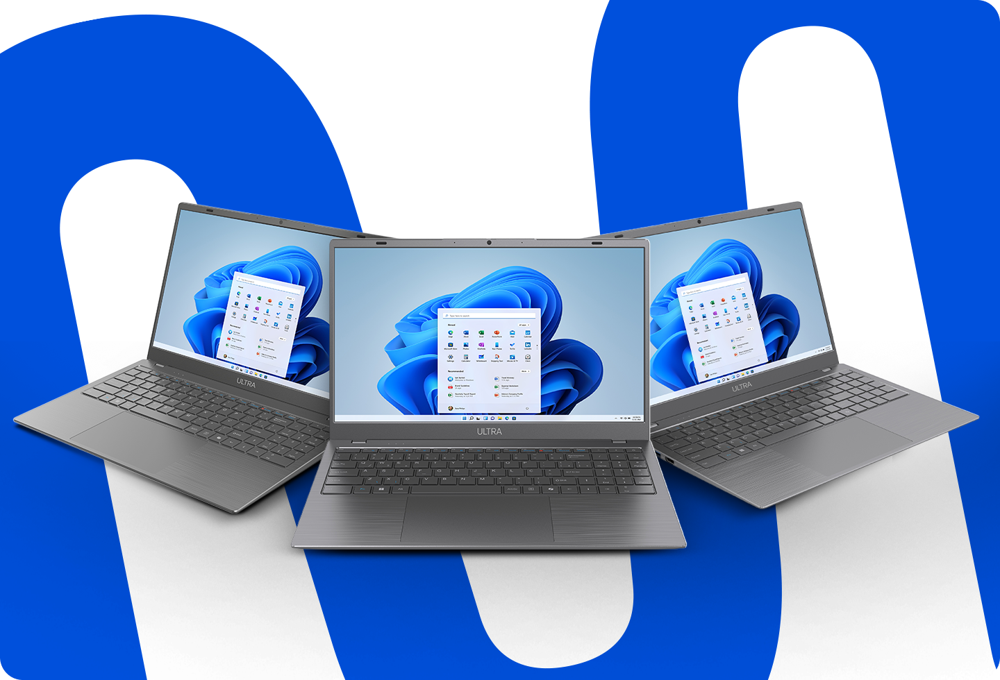
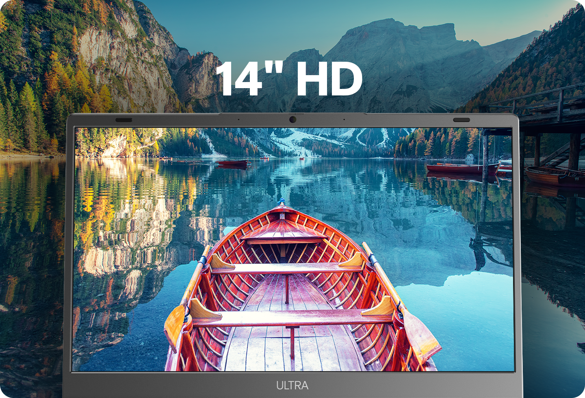
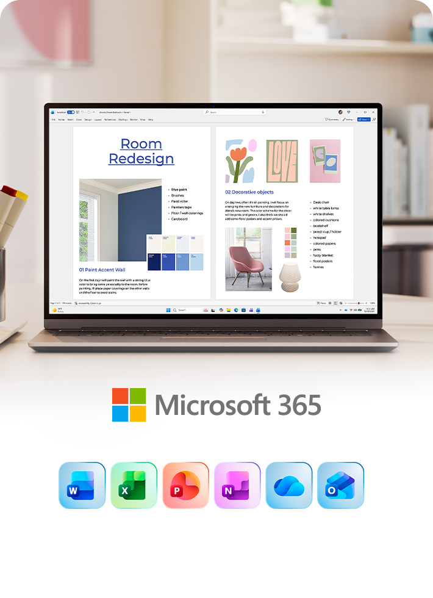
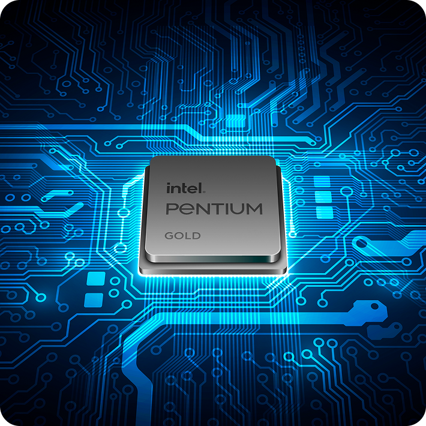
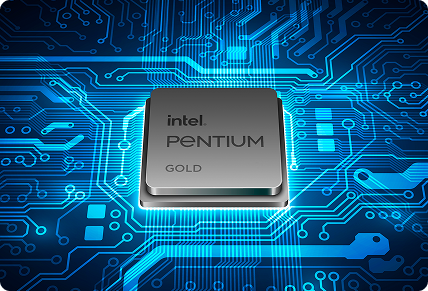
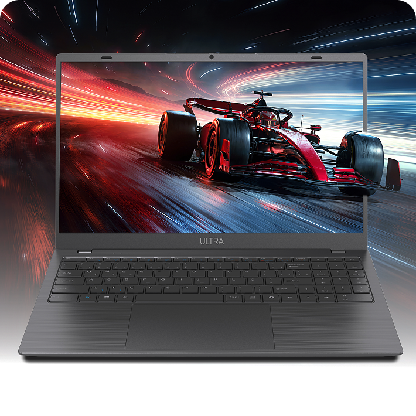
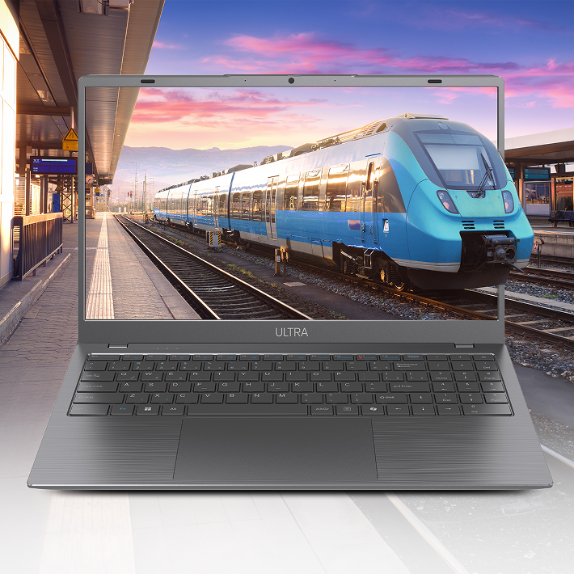
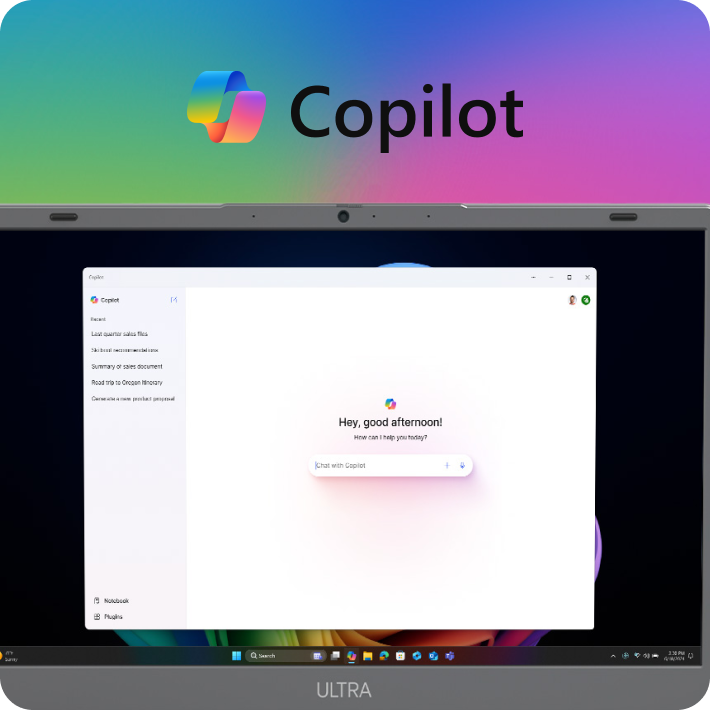
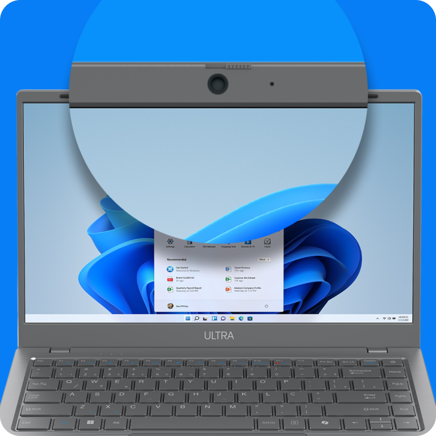
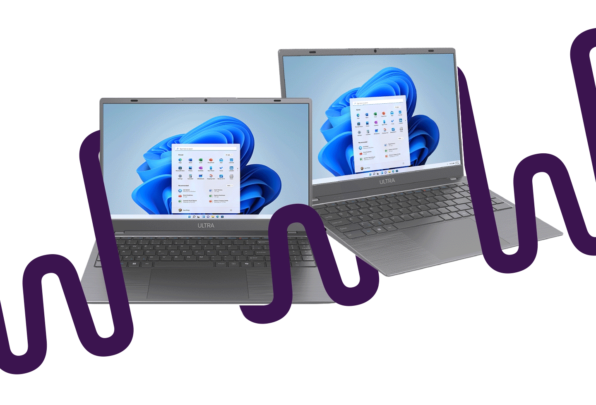

Simplifique sua rotina
Com o sistema operacional Windows 11 Home
, seu notebook oferece
ferramentas intuitivas e
recursos práticos para organizar suas tarefas
diárias, gerenciar compromissos e manter-se
produtivo em um só lugar.
Com o sistema operacional Windows 11 Home
, seu notebook oferece
ferramentas intuitivas e
recursos práticos para organizar suas tarefas
diárias, gerenciar compromissos e manter-se
produtivo em um só lugar.

Com cores vibrantes e detalhes precisos, é perfeita
para trabalhar, assistir a filmes ou navegar na web
com
conforto e praticidade.

Aproveite o primeiro ano de licença inclusa e desfrute do Word, Power Point, Excel e Outlook além de 1TB de armazenamento na nuvem via OneDrive.



Performance sólida para o seu ritmo.
Com o Intel® Pentium® Gold, você
garante a eficiência para lidar com seus
estudos, trabalho e tarefas do dia a dia.

Memória de 4GB e armazenamento de 128GB Flash (eMMC) com possibilidade de expansão e de fácil acesso. Perfeito para navegar na internet e realizar tarefas básicas com rapidez e eficiência.
Desfrute de imagens cristalinas em HD mergulhando em cores vibrantes e detalhes nítidos que elevam sua experiência visual.


O Copilot fornece respostas rápidas e pertinentes, assim dando auxílio em perguntas e elaborações de imagens a partir das suas ideias.
Tela de alta qualidade com
câmera de 2MP com cover
físico de privacidade

Acesse seus aplicativos favoritos
com apenas 1 clique.
